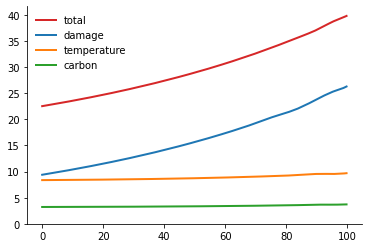
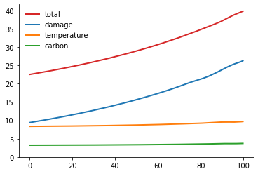

# packages
import numpy as np
import pandas as pd
import os
import sys
sys.path.append(os.path.dirname(os.getcwd()) + '/source')
import pickle
from solver_1d import false_transient_one_iteration_python
from supportfunctions import PDESolver_2d, finiteDiff
from numba import njit
from scipy.sparse import csc_matrix
from scipy.sparse.linalg import bicg
from derivative import derivatives_2d
import SolveLinSys
import time
from solver_ode import solve_ode, solve_ode_one, derivative_1d
from solver_jump import approach_one_100
from scipy import interpolate
import matplotlib.pyplot as plt
import matplotlib as mpl
mpl.rcParams['axes.spines.right'] = False
mpl.rcParams['axes.spines.top'] = False
mpl.rcParams["lines.linewidth"] = 2
mpl.rcParams['legend.frameon'] = False
# parameters
δ = 0.01
η = 0.032
θ_list = pd.read_csv("../data/model144.csv", header=None)[0].to_numpy()
θ_list = θ_list/1000
σy = 1.2*np.mean(θ_list)
ς = 0.1
# damage function
ȳ = 2
γ1 = 0.00017675
γ2 = 2*0.0022
γ3_list = np.array([0, 2*0.0197, 2*0.3853])
# y grid
numy_bar = 100
y_min = 0
y_max = 4
hy = (ȳ - y_min)/numy_bar
y_grid = np.arange(y_min, y_max+hy, hy)
y_grid[numy_bar]
2.0
# capital parameters
invkap = 0.09
α = 0.115
αₖ = - 0.043
σₖ = 0.0085
κ = 6.667
k0 = 80/α
n_temp = 16
n_carb = 9
θ_mat = θ_list.reshape(n_temp, n_carb)
θtemp_list = np.average(θ_mat, axis=1)
θcarb_list = np.mean(θ_mat, axis=0)
Jump model of damages¶
Intensity function:
\[\begin{split}\mathcal{I}(y) = \begin{cases}
(\frac{1}{\sqrt{2\pi} \varsigma})\exp\left[- \frac{(y - \bar y)^2}{2\varsigma^2}\right], \quad y \leqslant \bar y\\
(\frac{1}{\sqrt{2\pi}\varsigma}), \quad y > \bar y
\end{cases}\end{split}\]
HJB
\[\begin{split}\begin{aligned}
0 = \max_{\tilde e} \min_{\pi^d} &- \delta \phi(y) + \eta \log\tilde e \\
& + \frac{d\phi}{dy} \theta \tilde e + \frac{1}{2} \frac{d^2 \phi}{dy^2}(\tilde e)^2 |\sigma_y|^2 + \frac{1}{2} \frac{(\eta - 1)}{\delta} \gamma_2 (\tilde e)^2 |\sigma_y|^2\\
& + \frac{(\eta -1)}{\delta}(\gamma_1 + \gamma_2 y) \tilde e \theta + \mathcal{I}(y)\sum_j \pi^d_j \left[\phi_j(y) - \phi(y) \right] \\
& + \textbf{relative entropy}
\end{aligned}\end{split}\]
## Approach one:
\[\begin{split}\begin{aligned}
0 = \max_{\tilde e} \min_{g_j} &- \delta \phi(y) + \eta \log\tilde e + \frac{1}{2} \frac{d^2 \phi}{dy^2}(\tilde e)^2 |\sigma_y|^2 + \frac{\xi_m}{2} h'h\\
& + [ \frac{d\phi}{dy} + \frac{(\eta -1)}{\delta}(\gamma_1 + \gamma_2 y)]\cdot \tilde e \sigma_y h +\frac{1}{2} \frac{(\eta - 1)}{\delta} \gamma_2 (\tilde e)^2 |\sigma_y|^2\\
& + \sum_i \pi_i^c \frac{d\phi}{dy} \theta_i \tilde e + \sum_i \pi_i^c \frac{(\eta -1)}{\delta}(\gamma_1 + \gamma_2 y) \tilde e \theta_i + \xi_a \sum_i \hat\pi^c_i(\log \pi^c_i - \log \hat\pi^c_i)\\
& + \mathcal{I}(y)\sum_j\hat\pi_j^d g_j\left[\phi_j(y) - \phi(y) \right] + \xi_m \mathcal{I}(y) \sum_j \hat\pi_j^d [1 - g_j + g_j \log g_j]
\end{aligned}\end{split}\]
The optimal \(g_j\):
\[g_j^* = \exp\{\frac{1}{\xi_m}\left( \phi(y) - \phi_j(y)\right)\}\]
Plug back in
\[\begin{split}\begin{aligned}
0 = \max_{\tilde e} \min_{g_j} &- \delta \phi(y) + \eta \log\tilde e + \frac{1}{2} \frac{d^2 \phi}{dy^2}(\tilde e)^2 |\sigma_y|^2 + \frac{1}{2}\frac{(\eta -1)}{\delta}\gamma_2(\tilde e)^2 |\sigma_y|^2\\
& + \sum_i \pi_i^c \left[\frac{d\phi}{dy} + \frac{(\eta -1)}{\delta}(\gamma_1 + \gamma_2 y)\right] \tilde e \theta_i + \xi_a \sum_i \hat\pi^c_i(\log \pi^c_i - \log \hat\pi^c_i) \\
& + \xi_m \mathcal{I}(y) \sum_j \hat\pi_j^d [1 - g_j^* ]
\end{aligned}\end{split}\]
Intensity altered to be \(\iota^*(y) \mathcal{I} (y)\) where:
\[\iota^*(y) = \sum_j \hat\pi_j g_j^*\]
Distorted probability:
\[\pi^*_j = \frac{\exp\left(-\frac{1}{\xi_m} [\phi_j(y) - \phi(y)] \right) \hat\pi_j}{\iota^*(y)}\]
### Equivalent to:
\[\begin{split}\begin{aligned}
0 = \max_{\tilde e} \min_{g_j} &- \delta \phi(y) + \eta \log\tilde e + \frac{1}{2} \frac{d^2 \phi}{dy^2}(\tilde e)^2 |\sigma_y|^2 + \frac{1}{2}\frac{(\eta -1)}{\delta}\gamma_2(\tilde e)^2 |\sigma_y|^2\\
& + \sum_i \pi_i^c \left[\frac{d\phi}{dy} + \frac{(\eta -1)}{\delta}(\gamma_1 + \gamma_2 y)\right] \tilde e \theta_i + \xi_a \sum_i \hat\pi^c_i(\log \pi^c_i - \log \hat\pi^c_i) \\
\end{aligned}\end{split}\]
With boundary condititon:
\[\phi(\bar y) \approx - \xi_p \log \left( \sum_i {\pi^d_j} \exp ( - \frac{1}{\xi_p}\phi_j(\bar y) )\right)\]
def simulate_jump(y_grid, ems_star, solu, ME, θ_list, T=100, dt=1):
# ems = solu["ems"]
ems = ems_star
πᶜ = solu["πc"]
πᵈ = solu["πd"]
ι = solu["ι"]
h = solu["h"]
periods = int(T/dt)
et = np.zeros(periods)
yt = np.zeros(periods)
πᶜt = np.zeros((periods, len(θ_list)))
πᵈt = np.zeros((periods, len(πᵈ)))
ιt = np.zeros(periods)
ht = np.zeros(periods)
if ME is not None:
me_t = np.zeros(periods)
# interpolate
get_πᵈ = interpolate.interp1d(y_grid, πᵈ)
get_πᶜ = interpolate.interp1d(y_grid, πᶜ)
# y = np.mean(θ_list)*290
y = 1
for t in range(periods):
if y > np.max(y_grid):
break
else:
ems_point = np.interp(y, y_grid, ems)
πᵈ_list = get_πᵈ(y)
πᶜ_list = get_πᶜ(y)
ι_point = np.interp(y, y_grid, ι)
h_point = np.interp(y, y_grid, h)
if ME is not None:
me_point = np.interp(y, y_grid, ME)
me_t[t] = me_point
et[t] = ems_point
πᵈt[t] = πᵈ_list
πᶜt[t] = πᶜ_list
ιt[t] = ι_point
ht[t] = h_point
yt[t] = y
dy = ems_point*np.mean(θ_list)*dt
y = dy + y
if ME is not None:
return yt, et, πᵈt, πᶜt, ιt, ht, me_t
else:
return yt, et, πᵈt, πᶜt, ιt, ht
def plot_solu(ht, πᵈt, ϕ_list, solu, args):
ϕ = solu['φ']
ξa, ξw, ξp, numy_bar = args
fig, (ax1, ax2, ax3) = plt.subplots(1,3, figsize=(18,4))
fig.suptitle(r'$\xi_a = {}, \quad \xi_w =1/{}, \quad \xi_p = 1/{} $'.format(ξa, int(1/ξw), int(1/ξp)))
ax1.plot(ht)
ax1.set_ylim(bottom=0, top=0.1)
ax1.set_xlim(left=0)
ax1.set_xlabel('years')
ax1.set_ylabel('h')
ax2.plot(πᵈt[:,1][πᵈt[:,1]>0], label="high damage")
ax2.plot(πᵈt[:,0][πᵈt[:,0]>0], label="low damage")
ax2.plot(πᵈt[:,2], label="extreme")
ax2.set_ylim(bottom=0, top=1)
ax2.set_xlim(left=0)
ax2.legend()
ax2.set_xlabel('years')
ax2.set_ylabel('πᵈ')
ϕ_bound = np.average(np.exp(-1/ξp*ϕ_list), axis=0, weights=dmg_weight)
ϕ_bound = -ξp*np.log(ϕ_bound)
ax3.plot(y_grid[:numy_bar+1], ϕ, label='prior to jump')
ax3.plot(y_grid[numy_bar:], ϕ_list[0][numy_bar:], linestyle="--", color="black", label="post jump, low damage")
ax3.plot(y_grid[numy_bar:], ϕ_bound[numy_bar:], label="post jump, certainty equivalent")
ax3.plot(y_grid[numy_bar:], ϕ_list[1][numy_bar:], linestyle="-.", color="black", label="post jump, high damage")
ax3.plot(y_grid[numy_bar:], ϕ_list[2][numy_bar:], linestyle=":", color="black")
ax3.vlines(x=2, ymin=-11, ymax=5, linestyle="dashed", color="black")
# ax3.xlim(0,4)
# ax3.ylim(-0.02, 0.05)
ax3.set_ylabel('$\phi$')
ax3.set_xlabel('y')
ax3.set_xlim(left=0)
ax3.legend()
# ax3.set_title(r'$\xi_a = 1,000, \quad \xi_w =1/400, \quad \xi_p = 1/400 \times 5 $')
# plt.savefig("phi_x1.pdf", facecolor="w", edgecolor='w', bbox_inches="tight")
# simulate
def simulate_logkapital(invkap, αₖ, σₖ, κ, k0, T, dt):
periods = int(T/dt)
Kt = np.zeros(periods)
i = invkap
# log capital
Kt[0] = np.log(k0)
k = np.log(k0)
for t in range(periods-1):
k += (αₖ + i - κ/2*i**2 - .5*σₖ**2)*dt
Kt[t+1] = k
return Kt
def simulate_scc(invkap, αₖ, σₖ, κ, k0, MEt, T=100, dt=1):
Kt = simulate_logkapital(invkap, αₖ, σₖ, κ, k0, T, dt)
MCt = δ*(1-η)/((α - invkap)*np.exp(Kt))
SCCt = MEt/MCt*1000
return SCCt, MCt
SCC uncertainty decomposition: pre jump¶
First order condition for \(\tilde e\)
\[\left( \frac{d^2\phi(y)}{dy^2} + \frac{(\eta-1)}{\delta}\cdot\gamma_2 \right)|\sigma_y|^2\tilde e + \sum_j \pi^c_j \left[\frac{d\phi(y)}{dy} + \frac{(\eta - 1)}{\delta}(\gamma_1 + \gamma_2 y)\right]\theta_j + \frac{\eta}{\tilde e} = 0 \tag{$\ast$}\]
Call solution \(\tilde e^*\). Now solve:
\[\begin{split}\begin{aligned}
0 = & - \delta \color{red}{\phi(y)}+ \eta \log\tilde e^* + \frac{1}{2} \color{red}{ \frac{d^2 \phi}{dy^2}}\cdot(\tilde e^*)^2 |\sigma_y|^2 + \frac{1}{2}\frac{(\eta -1)}{\delta}\gamma_2(\tilde e^*)^2 |\sigma_y|^2\\
& + \left[\color{red}{\frac{d\phi}{dy}} + \frac{(\eta -1)}{\delta}(\gamma_1 + \gamma_2 y)\right] \tilde e^* \sum_i \pi_i^c \theta_i
\end{aligned}\end{split}\]
# solve for decompose
def decompose_test(y_grid, numy_bar, ems_star, solu, ϕ_list, args, ϵ=4, tol=1e-7, max_iter=5_000):
"""
compute jump model with ambiguity over climate models
"""
δ, η, θ_list, γ1, γ2, γ3_list, ȳ, dmg_weight, ς, ξp, ξa, ξw, σy = args
πᶜ = solu['πc']
h = solu["h"]
# solve for HJB with jump function
y_grid_cap = y_grid[:numy_bar+1]
dy = y_grid_cap[1] - y_grid_cap[0]
dΛ = γ1 + γ2*y_grid_cap
ddΛ = γ2
πᶜo = np.ones((len(θ_list), len(y_grid_cap)))/len(θ_list)
θ = θ_list@πᶜ
A = -δ*np.ones(y_grid_cap.shape)
B = θ*ems_star + σy*h*ems_star
C = σy**2*ems_star**2/2
D = δ*η*np.log(ems_star) + (η-1)*dΛ*ems_star*(θ + σy*h) + (η-1)*ddΛ*ems_star**2*σy**2/2\
+ ξw/2*h**2 + ξa*np.sum(πᶜ*(np.log(πᶜ) - np.log(πᶜo)), axis=0)
ϕ_bound = np.average(np.exp(-1/ξp*ϕ_list), axis=0, weights=dmg_weight)[:numy_bar+1]
ϕ_bound = -ξp*np.log(ϕ_bound)
ϕ = np.average(ϕ_list, axis=0, weights=dmg_weight)[:numy_bar+1]
# ϕ = ϕ_bound
episode = 0
lhs_error = 1
while lhs_error > tol and episode < max_iter:
ϕ_old = ϕ.copy()
dϕdy = derivative_1d(ϕ, 1, dy, "up")
dϕdyy = derivative_1d(ϕ, 2, dy, "up")
# solver
ϕ_new = solve_ode(A, B, C, D, y_grid_cap, ϕ, ϵ, (True, ϕ_bound[numy_bar]))
rhs = -δ*ϕ_new + B*dϕdy + C*dϕdyy + D
rhs_error = np.max(abs(rhs))
lhs_error = np.max(abs((ϕ_new - ϕ_old)/ϵ))
ϕ = ϕ_new
episode += 1
print("episode: {},\t ode error: {},\t ft error: {}".format(episode, rhs_error, lhs_error))
# dϕdy = derivative_1d(ϕ, 1, dy, "up")
# dϕdyy = derivative_1d(ϕ, 2, dy, "up")
temp = dϕdy+(η-1)*dΛ
# error = np.max(abs(A*ϕ + B*dϕdy + C*dϕdyy + D))
ME = -(dϕdy+(η-1)*dΛ)*(θ + σy*h) - (dϕdyy+(η-1)*ddΛ)*σy**2*ems_star# solve for decompose
ratio = ME/(δ*η/ems_star)
# print("PDE error: %s" % (error))
return ME, ratio, ϕ, ξa*np.sum(πᶜ*(np.log(πᶜ) - np.log(πᶜo)), axis=0)
def solve_baseline(y_grid, numy_bar, ems_star, solu, ϕ_list, args, ϵ=2, tol=1e-7, max_iter=10_000):
"""
compute jump model with ambiguity over climate models
"""
δ, η, θ_list, γ1, γ2, γ3_list, ȳ, dmg_weight, ς, ξp, ξa, ξw, σy = args
# ems_star = solu['ems']
# solve for HJB with jump function
y_grid_cap = y_grid[:numy_bar+1]
dy = y_grid_cap[1] - y_grid_cap[0]
dΛ = γ1 + γ2*y_grid_cap
ddΛ = γ2
πᶜo = np.ones((len(θ_list), len(y_grid_cap)))/len(θ_list)
θ = θ_list@πᶜo
A = -δ*np.ones(y_grid_cap.shape)
B = θ*ems_star
C = σy**2*ems_star**2/2
D = η*np.log(ems_star) + (η-1)/δ*dΛ*ems_star*θ + (η-1)/δ*ddΛ*ems_star**2*σy**2/2
ϕ_bound = np.average(ϕ_list, axis=0, weights=dmg_weight)[:numy_bar+1]
ϕ = ϕ_bound
episode = 0
lhs_error = 1
while lhs_error > tol and episode < max_iter:
ϕ_old = ϕ.copy()
dϕdy = derivative_1d(ϕ, 1, dy, "up")
dϕdyy = derivative_1d(ϕ, 2, dy, "up")
# solver
ϕ_new = solve_ode(A, B, C, D, y_grid_cap, ϕ, ϵ, (True, ϕ_bound[numy_bar]))
rhs = -δ*ϕ_new + B*dϕdy + C*dϕdyy + D
rhs_error = np.max(abs(rhs))
lhs_error = np.max(abs((ϕ_new - ϕ_old)/ϵ))
ϕ = ϕ_new
episode += 1
print("episode: {},\t ode error: {},\t ft error: {}".format(episode, rhs_error, lhs_error))
# dϕdy = derivative_1d(ϕ, 1, dy, "center")
# dϕdyy = derivative_1d(ϕ, 2, dy, "center")
ME = -(dϕdy+(η-1)/δ*dΛ)*θ - (dϕdyy+(η-1)/δ*ddΛ)*σy**2*ems_star
ratio = ME/(η/ems_star)
return ME, ratio
SCC uncertainty decomposition: pre jump¶
With minimization over climate models¶
Call solution \(\tilde e^*\). Now solve:
\[\begin{split}\begin{aligned}
0 = \min_h & - \delta \color{red}{\phi(y)}+ \frac{\xi_w}{2}h'h \\
& + \eta \log\tilde e^* + \frac{1}{2} \color{red}{ \frac{d^2 \phi}{dy^2}}\cdot(\tilde e^*)^2 |\sigma_y|^2 + \frac{1}{2}\frac{(\eta -1)}{\delta}\gamma_2(\tilde e^*)^2 |\sigma_y|^2\\
& + \left[\color{red}{\frac{d\phi}{dy}} + \frac{(\eta -1)}{\delta}(\gamma_1 + \gamma_2 y)\right] \tilde e^* (\sum_i \pi_i^c \theta_i + \sigma_y h)
\end{aligned}\end{split}\]
\[h^* = - \frac{\frac{d\phi(y)}{dy} + \frac{(\eta - 1 )}{\delta}(\gamma_1 + \gamma_2 y)}{\xi_w}\tilde e^* \sigma_y\]
Plug back in
\[\begin{split}\begin{aligned}
0 = & - \delta \color{red}{\phi(y)} - \frac{1}{2\xi_w} \left( \color{red}{\frac{d\phi(y)}{dy} } + \frac{(\eta -1)}{\delta} (\gamma_1 + \gamma_2 y) \right)^2 (\tilde e^*)^2 |\sigma_y|^2\\
& + \eta \log\tilde e^* + \frac{1}{2} \color{red}{ \frac{d^2 \phi}{dy^2}}\cdot(\tilde e^*)^2 |\sigma_y|^2 + \frac{1}{2}\frac{(\eta -1)}{\delta}\gamma_2(\tilde e^*)^2 |\sigma_y|^2\\
& + \left[\color{red}{\frac{d\phi}{dy}} + \frac{(\eta -1)}{\delta}(\gamma_1 + \gamma_2 y)\right] \tilde e^* \sum_i \pi_i^c \theta_i
\end{aligned}\end{split}\]
First order condition for \(\tilde e\)
\[\left( - \frac{1}{\xi_w} \left( \color{red}{\frac{d\phi(y)}{dy} } + \frac{(\eta -1)}{\delta} (\gamma_1 + \gamma_2 y) \right)^2 + \frac{d^2\phi(y)}{dy^2} + \frac{(\eta-1)}{\delta}\cdot\gamma_2 \right)|\sigma_y|^2 \tilde e + \sum_j \pi^c_j \left[\frac{d\phi(y)}{dy} + \frac{(\eta - 1)}{\delta}(\gamma_1 + \gamma_2 y)\right]\theta_j + \frac{\eta}{\tilde e} = 0 \tag{$\ast$}\]
# solve for decompose
def minimize_h(y_grid, numy_bar, ems_star, solu, ϕ_list, args, ϵ=4, tol=1e-7, max_iter=10_000):
"""
compute jump model with ambiguity over climate models
"""
δ, η, θ_list, γ1, γ2, γ3_list, ȳ, dmg_weight, ς, ξp, ξa, ξw, σy = args
# ems_star = solu['ems']
# solve for HJB with jump function
y_grid_cap = y_grid[:numy_bar+1]
dy = y_grid_cap[1] - y_grid_cap[0]
dΛ = γ1 + γ2*y_grid_cap
ddΛ = γ2
πᶜo = np.ones((len(θ_list), len(y_grid_cap)))/len(θ_list)
θ = θ_list@πᶜo
ϕ_bound = np.average(ϕ_list, axis=0, weights=dmg_weight)[:numy_bar+1]
ϕ = ϕ_bound
episode = 0
lhs_error = 1
while lhs_error > tol and episode < max_iter:
ϕ_old = ϕ.copy()
dϕdy = derivative_1d(ϕ, 1, dy, "center")
dϕdyy = derivative_1d(ϕ, 2, dy, "center")
# solver
temp = dϕdy + (η-1)/δ*dΛ
A = -δ*np.ones(y_grid_cap.shape)
B = θ*ems_star
C = σy**2*ems_star**2/2
D = η*np.log(ems_star) + (η-1)/δ*dΛ*ems_star*θ \
+ 1/2*(η-1)/δ*ddΛ*ems_star**2*σy**2\
- 1/(2*ξw)*temp**2*ems_star**2*σy**2
ϕ_new = solve_ode(A, B, C, D, y_grid_cap, ϕ, ϵ, (True, ϕ_bound[numy_bar]))
rhs = -δ*ϕ_new + B*dϕdy + C*dϕdyy + D
rhs_error = np.max(abs(rhs))
lhs_error = np.max(abs((ϕ_new - ϕ_old)/ϵ))
ϕ = ϕ_new
episode += 1
print("episode: {},\t ode error: {},\t ft error: {}".format(episode, rhs_error, lhs_error))
# dϕdy = derivative_1d(ϕ, 1, dy, "center")
# dϕdyy = derivative_1d(ϕ, 2, dy, "center")
# temp = dϕdy + (η-1)*dΛ
ME = -temp*θ - (- 1/ξw*temp**2 + dϕdyy+(η-1)*ddΛ)*σy**2*ems_star
ratio = ME/(η/ems_star)
return ME, ratio, ϕ
Minimize over \(\pi^c\)¶
Call solution \(\tilde e^*\). Now solve:
\[\begin{split}\begin{aligned}
0 = \min_{\hat \pi^c_i} & - \delta \color{red}{\phi(y)} + \eta \log\tilde e^* \\
& + \frac{1}{2} \color{red}{ \frac{d^2 \phi}{dy^2}}\cdot(\tilde e^*)^2 |\sigma_y|^2 + \frac{1}{2}\frac{(\eta -1)}{\delta}\gamma_2(\tilde e^*)^2 |\sigma_y|^2\\
& + \left[\color{red}{\frac{d\phi}{dy}} + \frac{(\eta -1)}{\delta}(\gamma_1 + \gamma_2 y)\right] \tilde e^* \sum_i \hat \pi_i^c \theta_i \\
& + \xi_a \sum_{i=1}^n \hat \pi^c_i (\log \hat \pi^c_i - \log \pi^c_i)
\end{aligned}\end{split}\]
# solve for decompose
def minimize_π(y_grid, numy_bar, ems_star, solu, ϕ_list, args, with_damage=False, ϵ=2, tol=1e-7, max_iter=10_000):
"""
compute jump model with ambiguity over climate models
"""
δ, η, θ_list, γ1, γ2, γ3_list, ȳ, dmg_weight, ς, ξp, ξa, ξw, σy = args
# ems_star = solu['ems']
# solve for HJB with jump function
y_grid_cap = y_grid[:numy_bar+1]
dy = y_grid_cap[1] - y_grid_cap[0]
dΛ = γ1 + γ2*y_grid_cap
ddΛ = γ2
πᶜo = np.ones((len(θ_list), len(y_grid_cap)))/len(θ_list)
if with_damage == False:
ϕ_bound = np.average(ϕ_list, axis=0, weights=dmg_weight)[:numy_bar+1]
if with_damage == True:
ϕ_bound = np.average(np.exp(-1/ξp*ϕ_list), axis=0, weights=dmg_weight)[:numy_bar+1]
ϕ_bound = -ξp*np.log(ϕ_bound)
ϕ = ϕ_bound
episode = 0
lhs_error = 1
while lhs_error > tol and episode < max_iter:
ϕ_old = ϕ.copy()
dϕdy = derivative_1d(ϕ, 1, dy,"up")
dϕdyy = derivative_1d(ϕ, 2, dy, "up")
# solver
temp = dϕdy + (η-1)/δ*dΛ
# minimize over π
weight = np.array([ - 1/ξa*temp*ems_star*θ for θ in θ_list])
weight = weight - np.max(weight, axis=0)
πᶜ = πᶜo*np.exp(weight)
πᶜ[πᶜ <= 1e-15] = 1e-15
πᶜ = πᶜ/np.sum(πᶜ, axis=0)
A = -δ*np.ones(y_grid_cap.shape)
B = (θ_list@πᶜ)*ems_star
C = σy**2*ems_star**2/2
D = η*np.log(ems_star) + (θ_list@πᶜ)*(η-1)/δ*dΛ*ems_star \
+ ξa*np.sum(πᶜ*(np.log(πᶜ) - np.log(πᶜo)), axis=0)\
+ 1/2*(η-1)/δ*ddΛ*ems_star**2*σy**2
ϕ_new = solve_ode(A, B, C, D, y_grid_cap, ϕ, ϵ, (True, ϕ_bound[numy_bar]))
rhs = -δ*ϕ_new + B*dϕdy + C*dϕdyy + D
rhs_error = np.max(abs(rhs))
lhs_error = np.max(abs((ϕ_new - ϕ_old)/ϵ))
ϕ = ϕ_new
episode += 1
print("episode: {},\t ode error: {},\t ft error: {}".format(episode, rhs_error, lhs_error))
# dϕdy = derivative_1d(ϕ, 1, dy, "center")
# dϕdyy = derivative_1d(ϕ, 2, dy, "center")
ME = -(dϕdy+(η-1)/δ*dΛ)*(θ_list@πᶜ) - (dϕdyy+(η-1)/δ*ddΛ)*σy**2*ems_star
ratio = ME/(η/ems_star)
return ME, ratio
Minimize over \(g_i\)¶
\[\begin{split}\begin{aligned}
0 = \min_h & - \delta \color{red}{\phi(y)} + \eta \log\tilde e^* \\
& + \frac{1}{2} \color{red}{ \frac{d^2 \phi}{dy^2}}\cdot(\tilde e^*)^2 |\sigma_y|^2 + \frac{1}{2}\frac{(\eta -1)}{\delta}\gamma_2(\tilde e^*)^2 |\sigma_y|^2\\
& + \left[\color{red}{\frac{d\phi}{dy}} + \frac{(\eta -1)}{\delta}(\gamma_1 + \gamma_2 y)\right] \tilde e^* \sum_i \pi_i^c \theta_i
\end{aligned}\end{split}\]
# solve for decompose
def minimize_g(y_grid, numy_bar, ems_star, solu, ϕ_list, args, ϵ=3, tol=1e-6, max_iter=10_000):
"""
compute jump model with ambiguity over climate models
"""
δ, η, θ_list, γ1, γ2, γ3_list, ȳ, dmg_weight, ς, ξp, ξa, ξw, σy = args
# ems_star = solu['ems']
# solve for HJB with jump function
ϕ_bound = np.average(np.exp(-1/ξp*ϕ_list), axis=0, weights=dmg_weight)
ϕ_bound = -ξp*np.log(ϕ_bound)
y_grid_cap = y_grid[:numy_bar+1]
dy = y_grid_cap[1] - y_grid_cap[0]
dΛ = γ1 + γ2*y_grid_cap
ddΛ = γ2
πᶜo = np.ones((len(θ_list), len(y_grid_cap)))/len(θ_list)
θ = θ_list@πᶜo
ϕ = np.average(ϕ_list, axis=0, weights=dmg_weight)[:numy_bar+1]
episode = 0
lhs_error = 1
while lhs_error > tol and episode < max_iter:
ϕ_old = ϕ.copy()
dϕdy = derivative_1d(ϕ, 1, dy, "center")
dϕdyy = derivative_1d(ϕ, 2, dy, "center")
# solver
temp = dϕdy + (η-1)/δ*dΛ
A = -δ*np.ones(y_grid_cap.shape)
B = θ*ems_star
C = σy**2*ems_star**2/2
D = η*np.log(ems_star) + (η-1)/δ*dΛ*ems_star*θ \
+ (η-1)/δ*ddΛ*ems_star**2*σy**2/2
ϕ_new = solve_ode(A, B, C, D, y_grid_cap, ϕ, ϵ, (True, ϕ_bound[numy_bar]))
rhs = -δ*ϕ_new + B*dϕdy + C*dϕdyy + D
rhs_error = np.max(abs(rhs))
lhs_error = np.max(abs((ϕ_new - ϕ_old)/ϵ))
ϕ = ϕ_new
episode += 1
print("episode: {},\t ode error: {},\t ft error: {}".format(episode, rhs_error, lhs_error))
# dϕdy = derivative_1d(ϕ, 1, dy, "up")
# dϕdyy = derivative_1d(ϕ, 2, dy, "up")
# temp = dϕdy + (η-1)*dΛ
ME = -temp*θ - ( dϕdyy+(η-1)/δ*ddΛ)*σy**2*ems_star
ratio = ME/(η/ems_star)
return ME, ratio, ϕ
Computation¶
ξa = 1/10_000*100
ξw = 1000*100
ξp = 1/20*100
dmg_weight = np.array([1/3, 1/3, 1/3])
args = (δ, η, θ_list, γ1, γ2, γ3_list, ȳ, dmg_weight, ς, ξp, ξa, ξw, σy)
solu, ϕ_list = approach_one_100(y_grid, numy_bar, args, max_iter=5000, ϵ=2, tol=1e-7)
ems_star = solu["ems"]
ME_total = η/solu['ems']
yt, et, πᵈt, πᶜt, ιt, ht, MEt = simulate_jump(y_grid[:numy_bar+1], ems_star, solu, ME_total, θ_list, dt=1/4)
args_plot = (ξa, ξw, ξp, numy_bar)
plot_solu(ht, πᵈt, ϕ_list, solu, args_plot)
episode: 1790, ode error: 5.868157153882114e-05, ft error: 9.029266134774616e-08
episode: 5000, ode error: 0.0002620329319091355, ft error: 5.358039483760457e-06
episode: 699, ode error: 0.001121881325521404, ft error: 9.933812883389237e-08
episode: 159, ode error: 0.0007931061203366209, ft error: 8.201261403328886e-08
# one type partition
# baseline
ξa = 1000*100
ξw = 1000*100
ξp = 1000*100
dmg_weight = np.array([1/3, 1/3, 1/3])
args = (δ, η, θ_list, γ1, γ2, γ3_list, ȳ, dmg_weight, ς, ξp, ξa, ξw, σy)
solu, ϕ_list = approach_one_100(y_grid, numy_bar, args, max_iter=5000, ϵ=2, tol=1e-7)
ME_base, ratio_base = solve_baseline(y_grid, numy_bar, ems_star, solu, ϕ_list, args)
_, _, _, _, _, _, MEt_base = simulate_jump(y_grid[:numy_bar+1], ems_star, solu, ME_base, θ_list,
T=100, dt=1/4)
# carbon
ξa = 1/10_000*100
ξw = 1000*100
ξp = 1000*100
dmg_weight = np.array([1/3, 1/3, 1/3])
args = (δ, η, θcarb_list, γ1, γ2, γ3_list, ȳ, dmg_weight, ς, ξp, ξa, ξw, σy)
solu, ϕ_list = approach_one_100(y_grid, numy_bar, args, max_iter=5000, ϵ=2, tol=1e-7)
ME_carb, ratiocarb = minimize_π(y_grid, numy_bar, ems_star, solu, ϕ_list, args)
_, _, _, _, _, _, MEt_carb = simulate_jump(y_grid[:numy_bar+1], ems_star, solu, ME_carb, θcarb_list,
T=100, dt=1/4)
# temperature
ξa = 1/10_000*100
ξw = 1000*100
ξp = 1000*100
dmg_weight = np.array([1/3, 1/3, 1/3])
args = (δ, η, θtemp_list, γ1, γ2, γ3_list, ȳ, dmg_weight, ς, ξp, ξa, ξw, σy)
solu, ϕ_list = approach_one_100(y_grid, numy_bar, args, max_iter=5000, ϵ=2, tol=1e-7)
ME_temp, ratiotemp = minimize_π(y_grid, numy_bar, ems_star, solu, ϕ_list, args)
_, _, _, _, _, _, MEt_temp = simulate_jump(y_grid[:numy_bar+1], ems_star, solu, ME_temp, θtemp_list,
T=100, dt=1/4)
# damage
ξa = 1000*100
ξw = 1000*100
ξp = 1/20*100
dmg_weight = np.array([1/3, 1/3, 1/3])
args = (δ, η, θ_list, γ1, γ2, γ3_list, ȳ, dmg_weight, ς, ξp, ξa, ξw, σy)
solu, ϕ_list = approach_one_100(y_grid, numy_bar, args, max_iter=5000, ϵ=2, tol=1e-7)
ME_dmg, ratiodmg, ϕ = minimize_g(y_grid, numy_bar, ems_star, solu, ϕ_list, args)
_, _, _, _, _, _, MEt_dmg = simulate_jump(y_grid[:numy_bar+1], ems_star, solu, ME_dmg, θ_list,
T=100, dt=1/4)
episode: 1439, ode error: 8.52054873097946e-05, ft error: 9.731790306943822e-08
episode: 5000, ode error: 0.00028510678855917654, ft error: 5.6422580421378044e-05
episode: 698, ode error: 0.0010822946724872726, ft error: 9.888824781256744e-08
episode: 5000, ode error: 0.0005631647276283999, ft error: 3.461121357517527e-06
episode: 160, ode error: 0.00036692092704457627, ft error: 8.492238645629868e-08
episode: 5000, ode error: 6.166470706174543e-05, ft error: 7.140694791463176e-06
episode: 5000, ode error: 0.00025966349405014133, ft error: 6.31548840636098e-05
episode: 5000, ode error: 0.0010781081819864202, ft error: 4.559463895059679e-05
episode: 129, ode error: 0.0005614624486287856, ft error: 9.503780162845032e-08
episode: 155, ode error: 0.0003887059663242008, ft error: 9.649518295518078e-08
episode: 1380, ode error: 6.594517191975402e-05, ft error: 9.964620728553086e-08
episode: 641, ode error: 0.00023774586875191517, ft error: 9.88351676056709e-08
episode: 699, ode error: 0.0010863731011784483, ft error: 9.885002238974039e-08
episode: 129, ode error: 0.0005606578147541799, ft error: 9.531620603908664e-08
episode: 156, ode error: 0.00042125209438661354, ft error: 9.844877002507246e-08
episode: 1439, ode error: 8.52054873097946e-05, ft error: 9.731790306943822e-08
episode: 5000, ode error: 0.00028510678855917654, ft error: 5.6422580421378044e-05
episode: 698, ode error: 0.0010822946724872726, ft error: 9.888824781256744e-08
episode: 5000, ode error: 0.0007878946203311657, ft error: 1.4170090323339934e-06
episode: 110, ode error: 0.0007420792576578426, ft error: 8.83689559157593e-07
# plot
# a function of y
plt.subplots()
plt.plot(y_grid[:numy_bar+1],np.log(ME_total/ME_base)*100, label="total", color="tab:red")
plt.plot(y_grid[:numy_bar+1],np.log(ME_dmg/ME_base)*100, label="damage", color="darkorange")
plt.plot(y_grid[:numy_bar+1],np.log(ME_temp/ME_base)*100, label="temperature", color="darkgreen")
plt.plot(y_grid[:numy_bar+1],np.log(ME_carb/ME_base)*100, label="carbon", color="navy")
plt.legend()
# a function of t
plt.subplots()
dt =1/4
years = np.arange(0, 100, dt)
plt.plot(years,np.log(MEt/MEt_base)*100, label="total", color="tab:red")
plt.plot(years, np.log(MEt_dmg/MEt_base)*100, label="damage")
plt.plot(years, np.log(MEt_temp/MEt_base)*100, label="temperature")
plt.plot(years, np.log(MEt_carb/MEt_base)*100, label="carbon")
plt.legend()
plt.ylim(0)
(0.0, 41.630663899501535)
 

# two type partition
# baseline
ξa = 1000*100
ξw = 1000*100
ξp = 1000*100
dmg_weight = np.array([1/3, 1/3, 1/3])
args = (δ, η, θ_list, γ1, γ2, γ3_list, ȳ, dmg_weight, ς, ξp, ξa, ξw, σy)
solu, ϕ_list = approach_one_100(y_grid, numy_bar, args, max_iter=5000, ϵ=4, tol=1e-7)
ME_base, ratio_base = solve_baseline(y_grid, numy_bar, ems_star, solu, ϕ_list, args)
_, _, _, _, _, _, MEt_base = simulate_jump(y_grid[:numy_bar+1], ems_star, solu, ME_base, θ_list,
T=100, dt=1/4)
# carbon and damage
ξa = 1/10_000*100
ξw = 1000*100
ξp = 1/20*100
dmg_weight = np.array([1/3, 1/3, 1/3])
args = (δ, η, θcarb_list, γ1, γ2, γ3_list, ȳ, dmg_weight, ς, ξp, ξa, ξw, σy)
solu, ϕ_list = approach_one_100(y_grid, numy_bar, args, max_iter=5000, ϵ=4, tol=1e-7)
MEcarbdmg, ratiocarbdmg = minimize_π(y_grid, numy_bar, ems_star, solu, ϕ_list, args, True)
_, _, _, _, _, _, MEt_carbdmg = simulate_jump(y_grid[:numy_bar+1], ems_star, solu, MEcarbdmg, θcarb_list,
T=100, dt=1/4)
# temperature and damage
ξa = 1/10_000*100
ξw = 1000*100
ξp = 1/20*100
dmg_weight = np.array([1/3, 1/3, 1/3])
args = (δ, η, θtemp_list, γ1, γ2, γ3_list, ȳ, dmg_weight, ς, ξp, ξa, ξw, σy)
solu, ϕ_list = approach_one_100(y_grid, numy_bar, args, max_iter=5000, ϵ=2, tol=1e-7)
MEtempdmg, ratiotempdmg = minimize_π(y_grid, numy_bar, ems_star, solu, ϕ_list, args, True)
_, _, _, _, _, _, MEt_tempdmg = simulate_jump(y_grid[:numy_bar+1], ems_star, solu, MEtempdmg, θtemp_list,
T=100, dt=1/4)
# temperature and carbon
ξa = 1/10_000*100
ξw = 1000*100
ξp = 1000*100
dmg_weight = np.array([1/3, 1/3, 1/3])
args = (δ, η, θ_list, γ1, γ2, γ3_list, ȳ, dmg_weight, ς, ξp, ξa, ξw, σy)
solu, ϕ_list = approach_one_100(y_grid, numy_bar, args, max_iter=5000, ϵ=2, tol=1e-7)
ME_π, ratio_π = minimize_π(y_grid, numy_bar, ems_star, solu, ϕ_list, args)
_, _, _, _, _, _, MEt_π = simulate_jump(y_grid[:numy_bar+1], ems_star, solu, ME_π, θ_list,
T=100, dt=1/4)
episode: 5000, ode error: 6.877723904283317e-05, ft error: 9.325197360965376e-07
episode: 5000, ode error: 0.00022037774056452714, ft error: 1.6559773548197043e-05
episode: 357, ode error: 0.0010956423575631362, ft error: 8.557275432696798e-08
episode: 5000, ode error: 0.0005687712802558004, ft error: 1.4780572820338733e-05
episode: 160, ode error: 0.00036684781123897184, ft error: 8.458870892624759e-08
episode: 5000, ode error: 6.89209376945471e-05, ft error: 1.1592588500253243e-06
episode: 323, ode error: 0.0002159195043805323, ft error: 9.758622870892353e-08
episode: 353, ode error: 0.001102555313320392, ft error: 9.769825393135534e-08
episode: 5000, ode error: 0.0007966789372689034, ft error: 1.0163900354687172e-06
episode: 184, ode error: 0.0007649929386310261, ft error: 9.715167204049635e-08
episode: 1380, ode error: 6.594517191975402e-05, ft error: 9.964620728553086e-08
episode: 641, ode error: 0.00023774586875191517, ft error: 9.88351676056709e-08
episode: 699, ode error: 0.0010863731011784483, ft error: 9.885002238974039e-08
episode: 160, ode error: 0.0007866885627567446, ft error: 9.719733462532076e-08
episode: 147, ode error: 0.0007752590695015368, ft error: 8.842503707029437e-08
episode: 1790, ode error: 5.868157153882114e-05, ft error: 9.029266134774616e-08
episode: 5000, ode error: 0.0002620329319091355, ft error: 5.358039483760457e-06
episode: 699, ode error: 0.001121881325521404, ft error: 9.933812883389237e-08
episode: 129, ode error: 0.0005636755161776003, ft error: 7.222103048931672e-08
episode: 152, ode error: 0.00044496600327102037, ft error: 9.702258330079871e-08
# plot
# a function of y
plt.subplots()
plt.plot(y_grid[:numy_bar+1],np.log(ME_total/ME_base)*100, label="total")
plt.plot(y_grid[:numy_bar+1],np.log(MEtempdmg/ME_base)*100, label="temperature and damage")
plt.plot(y_grid[:numy_bar+1],np.log(MEcarbdmg/ME_base)*100, label="carbon and damage")
plt.plot(y_grid[:numy_bar+1],np.log(ME_π/ME_base)*100, label="temperature and carbon")
plt.legend()
# a function of t
plt.subplots()
dt =1/4
years = np.arange(0, 100, dt)
plt.plot(years,np.log(MEt/MEt_base)*100, label="total")
plt.plot(years, np.log(MEt_tempdmg/MEt_base)*100, label="temperature and damage")
plt.plot(years, np.log(MEt_carbdmg/MEt_base)*100, label="carbon and damage")
plt.plot(years, np.log(MEt_π/MEt_base)*100, label="temperature and carbon")
plt.legend()
plt.ylim(0)
(0.0, 41.19331200925057)